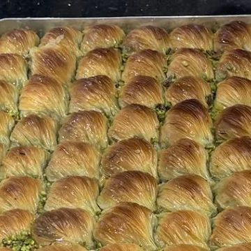
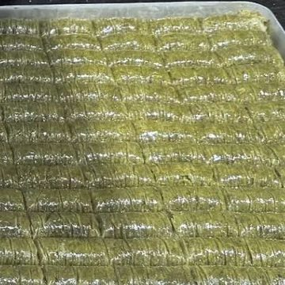
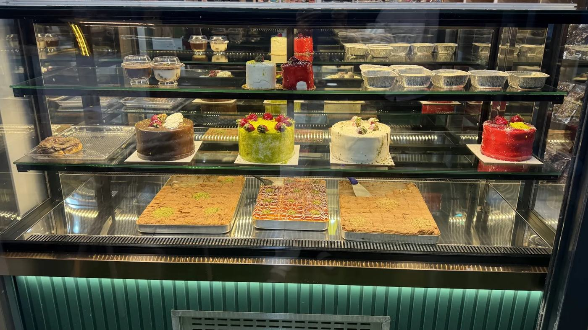
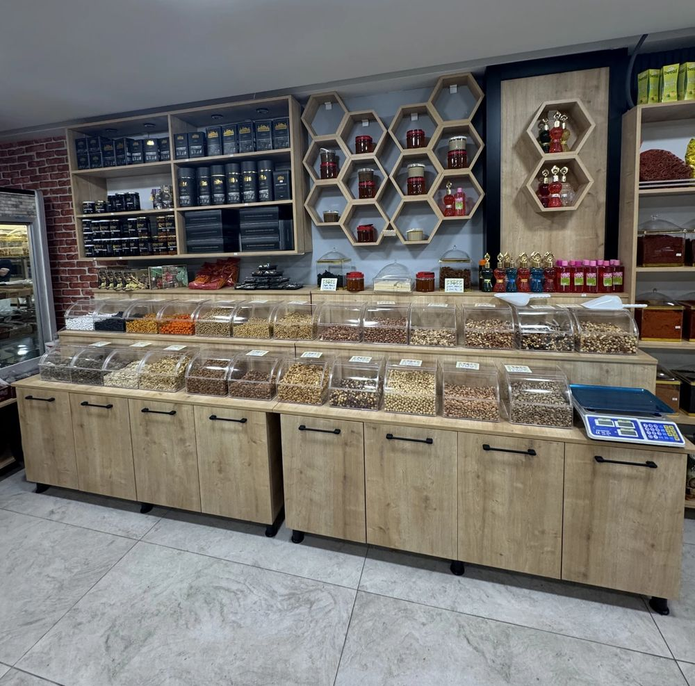
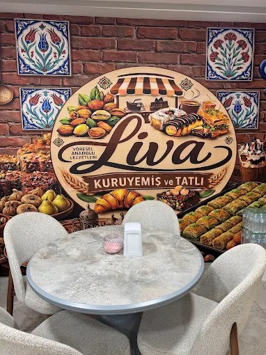

Yöresel Anadolu lezzetleri · Kovancılar
Tepsi tepsi tatlı, kavanoz kavanoz çerez.
Fıstıklı baklava ve kadayıftan pastalara, taze kuruyemişten yöresel ürünlere kadar her şey tek çatı altında. İster salonda çayınla otur, ister paket yaptır.
- 4,8Google Haritalar puanı
- Salonda oturma alanı
- Paket yaptırabilirsiniz


Pasta & sütlü tatlı
Vitrinde her renkten bir tatlı.
Çikolatalı, fıstıklı ve frambuazlı pastalar, porsiyonluk sütlü tatlılar ve tepsi tatlıları. Beğendiğini seç; masada ye ya da paket yaptır.
- Yaş pasta & tart
- Sütlü tatlılar
- Tepsi tatlıları


Kuruyemiş & çerez
Kavanoz kavanoz, gramına kadar.
Şeffaf kavanozlarda duran kuruyemişi ve çerezi istediğin kadar tartıyoruz. Harput dibek kahvesi, Ağın leblebisi, lokum, pestil ve köme gibi yöresel ürünler de burada.
- Antep Fıstığı
- Fındık
- Badem
- Kaju
- Ağın Leblebisi
- Kabak Çekirdeği
- Kuru Kayısı
- Lokum
- Pestil & Köme
- Harput Dibek Kahvesi
- Bal & Pekmez
- Baharat
Mekân
Tuğla duvarın önünde bir çay.
Çini panolar, tuğla duvar ve rahat koltuklar. Tatlını al, masaya geç, çayını yudumla. Acelen varsa paket yaptır.
- 4,8Google Haritalar puanı
- Kovancılar, Elazığ Cd.

Bir ürünü sormak ister misiniz?
Tepsi, pasta ya da çerez için WhatsApp'tan yazın; sorularınızı yanıtlayalım.